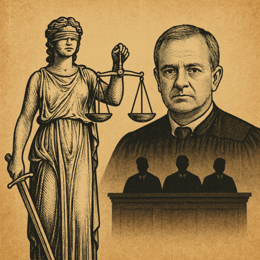

Publicado em 2025-04-08 16:37:56
Em Portugal, o palco da justiça tem protagonistas distintos. Uns caminham pela sombra dos salões do poder, outros enfrentam a tempestade de frente, com a toga apertada pelo vento da verdade. Entre estes, ergue-se uma figura que, para muitos, simboliza a última centelha de integridade judicial: Carlos Alexandre, o juiz que recusa convites, ignora bajulações e vive com parcimónia, mesmo quando mergulhado nos processos mais sensíveis do Estado.
É conhecido por tratar todos por igual: banqueiros, ex-primeiros-ministros, CEO's ou advogados influentes. Alexandre não se curva. Foi ele quem esteve na origem de casos como:
Sempre agiu com discrição, sem nunca usar os processos como trampolim mediático. E no entanto, foi afastado da instrução do caso Marquês por um sorteio controverso que ditou a entrada em cena de Ivo Rosa, o juiz cujo nome é hoje sinónimo de polémica e decisões controversas.
O teatro da injustiça:
Ivo Rosa ilibou José Sócrates da maioria dos crimes. Numa leitura hiperformalista, anulou provas por questões processuais, ignorando indícios materiais gritantes. Defensores do garantismo aplaudiram. A população indignou-se. E a pergunta ecoou: de que lado está a Justiça?
Recentemente, Rosa voltou a ser manchete ao querer libertar um condenado a dez anos e meio de prisaão por tráfico e associação criminosa (o processo "Xuxas"). Os outros juízes disseram "não". Foi derrotado. Mas a tentação de aliviar criminosos com o manto do formalismo voltou a estar em cena.
Dois caminhos, duas justiças:
A verdade é que em Portugal, a Justiça corre a duas velocidades. Uma para quem rouba um pacote de arroz. Outra para quem desvia milhões. E nós, os que ficamos a ver o palco, vamos percebendo que há togados que fazem parte do problema, e poucos que ousam ser parte da solução.
Carlos Alexandre é um desses poucos.
Mas o sistema isola-o, como quem isola uma chama num deserto de conveniências. A sua existência é incómoda, pois lembra-nos que ainda há quem leve o juramento a sério.
Num país sedento de verdade, integridade e coragem, a Justiça precisa de mais Alexandres.
E de menos Ivos.
Francisco Gonçalves, in Fragmentos do Caos